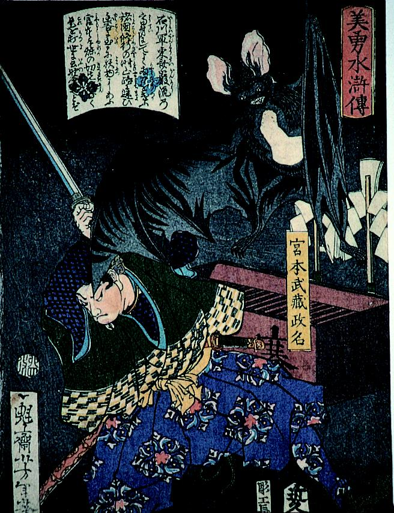

政名と蝙蝠のような化物との戦い。化物は巨大で、空中から政名に襲い掛かっている。
著作者：月岡芳年／出典：親書誌：A5_hermitage_0006：美勇水滸伝 宮本武蔵政名；ビユウスイコデンミヤモトムサシマサナ／日付：2011／資源識別子：A5_hermitage_0006_0001_0000
Copyright (c)2010- International Research Center for Japanese Studies, Kyoto, Japan. All rights reserved.